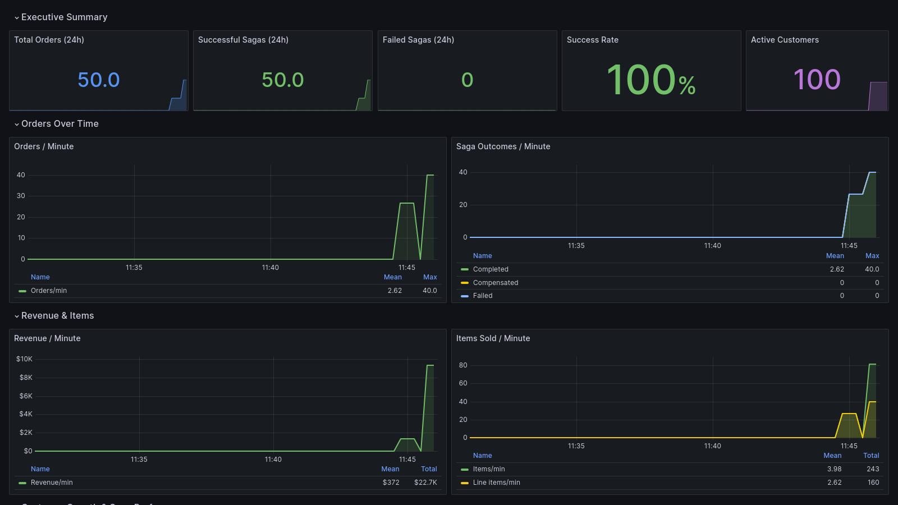
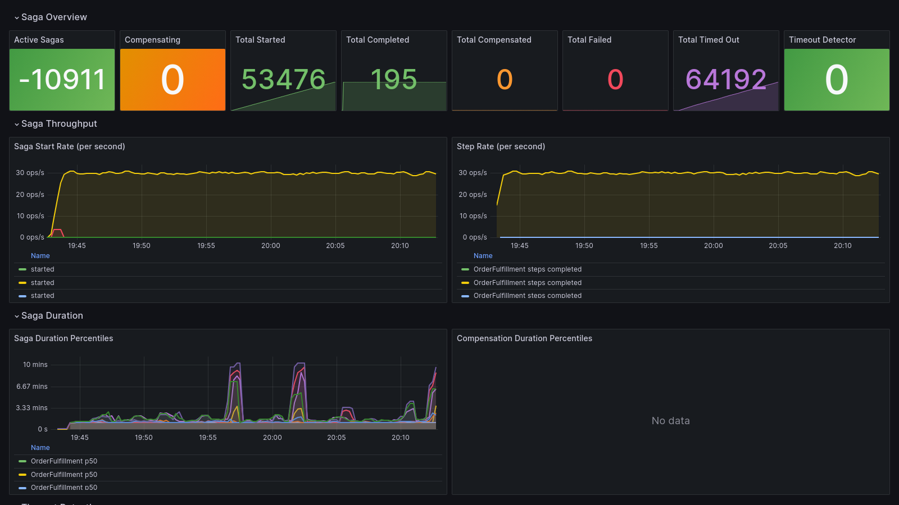
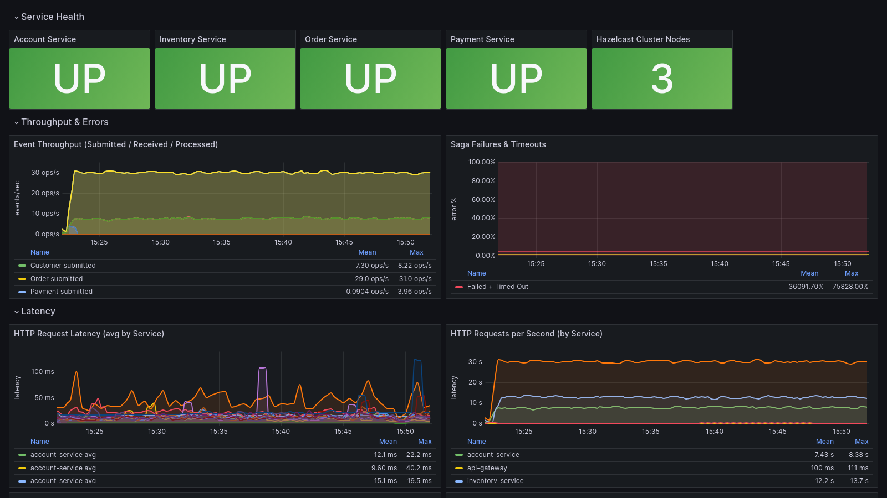
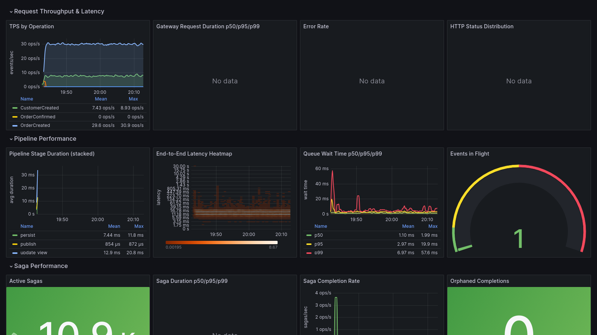
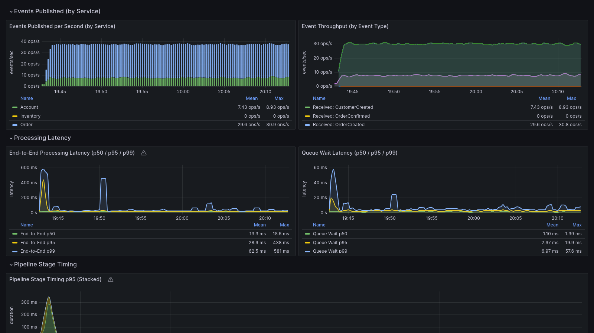
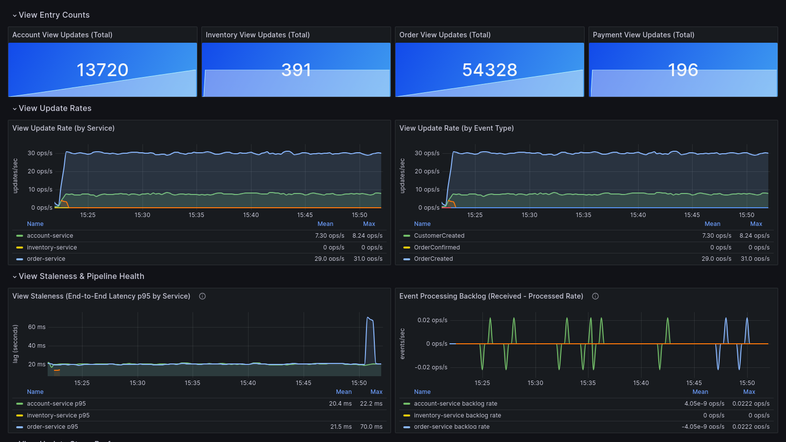
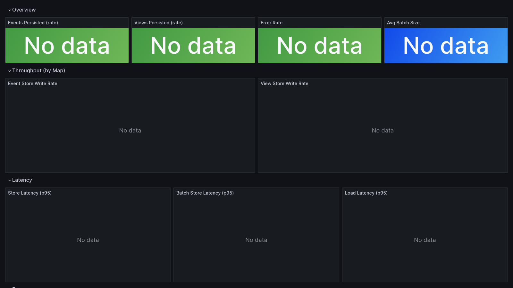

HAZELCAST
Product Marketing Brief
Microservices Framework
A complete reference architecture that shows customers how to build
microservices on Hazelcast — not just that they can.
Customers know Hazelcast is fast. What they often lack is a blueprint for putting that
speed to work inside a microservices architecture. This framework fills that gap: a
four-service eCommerce application built entirely on Hazelcast and
Spring Boot, demonstrating every pattern needed to go from a monolith to independently
deployable, event-driven services. It ships with a 13-part blog series,
seven Grafana dashboards, and 10 AI-powered MCP tools
— ready for demos, PoCs, enablement, and blog content.
The "What" (Everyone Says This)
- "Use Hazelcast for in-memory data"
- "Hazelcast is fast and scalable"
- "Put Hazelcast in your microservices"
- "Hazelcast supports event streaming"
The "How" (This Framework Shows It)
- Event sourcing with IMap, Event Journal, and Jet pipelines
- 100K+ ops/sec views at <1ms P99 via materialized views
- Distributed sagas coordinated through ITopic pub/sub
- Write-behind persistence, circuit breakers, dead letter queues
Hazelcast Features in Action
IMap
Event store, views, saga state, outbox, DLQ
Jet Pipeline
Real-time stream processing
ITopic
Cross-service event bus
Event Journal
Change data capture
Entry Processor
Atomic in-place updates
MapStore
Write-behind to PostgreSQL
Near Cache
Local query acceleration
FlakeIdGenerator
Distributed sequence IDs
VectorCollection
AI similarity search (EE)
Live Dashboards — Demo-Ready Out of the Box

Business Overview — Orders, Revenue, Customers

Saga Coordination — Distributed Transactions
Traditional Hazelcast Strengths — Demonstrated End-to-End
High Throughput
Materialized views deliver 100,000+ operations/sec with
sub-millisecond latency. Customers see these numbers live in the Grafana dashboard,
not in a slide deck.
Low Latency at Scale
End-to-end event processing (HTTP → pipeline → view update → publish)
completes in <13ms at P50. The Jet pipeline runs entirely
in-memory with no external message broker.
Resilience & Reliability
Circuit breakers, transactional outbox, dead letter queues, and idempotency guards
demonstrate that Hazelcast applications handle partial failure gracefully
— not just when everything works.
Distributed Coordination
Two saga patterns (choreographed + orchestrated) show Hazelcast ITopic and IMap
coordinating multi-service transactions with automatic
compensation — replacing the need for XA or external workflow engines.
The AI story builds on the performance story.
Hazelcast's sub-millisecond latency and in-memory processing aren't just fast for
traditional workloads — they're what AI applications need for real-time inference,
similarity search, and agentic tool execution. This framework shows the transition path.
New: AI-Ready Capabilities
Vector Similarity Search
Product recommendations via VectorCollection with HNSW indexing
(Enterprise) or IMap-based cosine similarity (Community). One API endpoint, automatic
edition detection, zero code changes between editions.
AI Agent Integration (MCP)
10 MCP tools let AI assistants (Claude, GPT, etc.) query
views, submit events, inspect sagas, manage DLQ entries, and run demo scenarios.
Supports API key RBAC with three roles.
Content & Enablement Assets
13
Blog Posts
From event sourcing fundamentals through performance engineering. Each maps to a code milestone.
7
Grafana Dashboards
Business metrics, system health, event flow, sagas, views, persistence, performance.
5 min
Time to Demo
Clone, build, docker compose up. Sample data, demo scripts, and dashboards auto-provision.
Deployment flexibility: Runs on a developer laptop via Docker Compose,
deploys to AWS EKS with provided Helm charts and Terraform, or targets GCP GKE / Azure AKS.
Suitable for live demos, trade show booths, and customer PoCs.
Every claim on the previous page has a dashboard to back it up. Seven pre-provisioned
Grafana dashboards auto-deploy with the application — no manual setup, no configuration.
Walk a prospect from business outcomes to technical implementation in a single demo session.

System Overview
Service health, JVM metrics, throughput, latency percentiles, error rates

Performance Testing
Live TPS, pipeline throughput, saga completion rates, resource utilization

Event Flow
Event throughput by type, latency percentiles, pipeline stage timing
Saga Coordination
Saga outcomes, compensation tracking, step duration, timeout detection

Materialized Views
View rebuild latency, cache hit rates, entry counts, near cache performance

Persistence Layer
Write-behind queue depth, batch sizes, PostgreSQL latency, eviction metrics
How Product Marketing Can Use This
Customer Demos & PoCs
Run the full four-service eCommerce demo live. Show real throughput numbers,
trigger saga failures, watch circuit breakers trip — all visible in Grafana.
Customize for specific verticals by extending the domain.
Blog & Content Marketing
13 ready-to-publish blog posts covering event sourcing, stream processing,
distributed transactions, resilience, persistence, observability, AI integration,
and performance engineering. Each post maps to working code.
Trade Shows & Booth Demos
Configurable for long-running demos (8+ hours at low TPS). Dashboards show live
business metrics (orders, revenue, customers) alongside technical telemetry.
AI assistant interaction via MCP makes an engaging live demo.
SA & Partner Enablement
Architectural decision records (ADRs), guides for every pattern, and a modular
codebase that SAs can fork and extend. The blog series doubles as a self-paced
technical curriculum.
Technology Stack
| Component | Technology | Component | Technology |
|---|
| Runtime | Java 17+ | AI / ML | Spring AI MCP 1.0, VectorCollection |
| Framework | Spring Boot 3.2 | Metrics | Micrometer / Prometheus |
| Data Grid | Hazelcast 5.6 | Dashboards | Grafana 10.3 |
| Streaming | Hazelcast Jet | Tracing | Jaeger (OTLP) |
| Database | PostgreSQL 16+ | Containers | Docker / K8s Helm |
Accompanying Blog Series (13 Parts): From event sourcing fundamentals through
saga patterns, vector search, AI integration, resilience, persistence, observability, and
performance engineering. Each post walks through architectural decisions with working code
— ready for theyawns.com, the Hazelcast corporate blog, or partner publications.
Ready to Demo
Five minutes from clone to running demo. Docker Compose brings up all four services,
a 3-node Hazelcast cluster, PostgreSQL, Prometheus, Grafana, and Jaeger. Sample data
and demo scripts are included. The MCP server auto-registers with Claude Code.
Repository: Available upon request
Blog: theyawns.com
Quick Start: ./scripts/docker/start.sh
Contact: mike.yawn@hazelcast.com